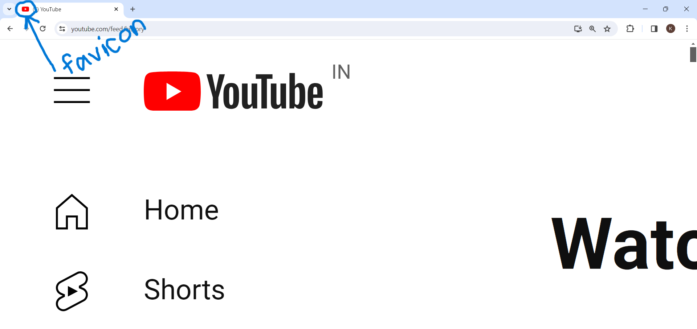

Adding Favicon
- Favicon stands for "favorite icon".
- It's a small image or icon associated with a website.
- Appears in the browser's address bar, bookmarks, and browser tabs.
- Helps users identify and differentiate between multiple open tabs or bookmarks.

- Typically square in shape.
- Commonly created in .ico format but can also be .png or other image formats.
- Contributes to the branding and recognition of a website.
- Enhances overall user experience by providing visual representation